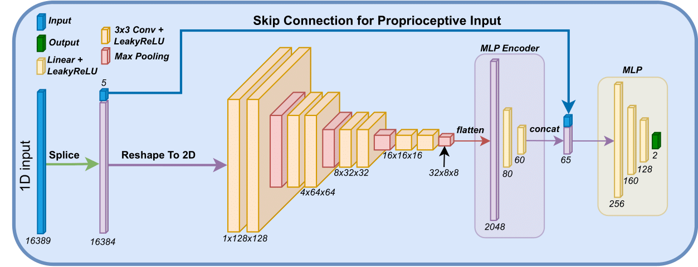
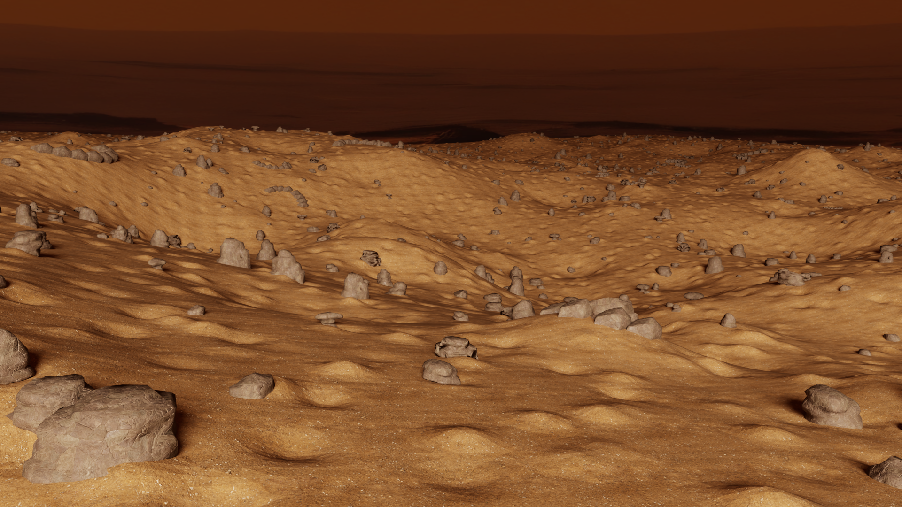
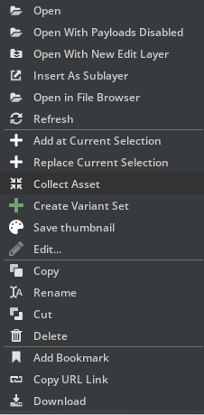
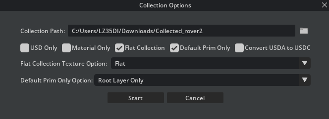

RL-suite Overview
Welcome to the RL-suite documentation! This suite is designed to provide comprehensive resources for developing and testing reinforcement learning algorithms with a focus on space robotics. Below you will find links to various sections of our documentation, including installation instructions, examples, task details, development guides, and benchmarks.
Table of Contents
- Installing the suite: Step-by-step guide on how to get the RL-suite up and running on your system.
- Examples of using the suite: A collection of examples showcasing the capabilities of the RL-suite and how to use it for your projects.
- Task Details: Detailed descriptions of the tasks available within the suite, including their objectives, input/output specifications, and evaluation metrics.
- Developing new tasks and adding assets: Guidelines on how to extend the RL-suite by developing new tasks or adding new assets.
- Benchmarks: Benchmark results for different reinforcement learning algorithms using the tasks provided in the suite.
Getting Help
If you encounter any issues or have questions regarding the RL-suite, please don't hesitate to reach out by emailing me at abmoRobotics@gmail.com.
Thank you for exploring the RL-suite.
Installation Guide
This guide provides detailed instructions for setting up the RL-suite using Docker, which simplifies the installation process of Isaac Sim, Isaac Lab, and our suite. Additionally, we provide steps for native installation.
Prerequisites
Before you begin, ensure your system meets the following requirements:
Hardware Requirements
- GPU: RTX GPU with at least 8 GB VRAM (Tested on NVIDIA RTX 3090 and NVIDIA RTX A6000)
- CPU: Intel i5/i7 or equivalent
- RAM: 32GB or more
Software Requirements
- Operating System: Ubuntu 20.04 or 22.04
- Packages: Docker and Nvidia Container Toolkit
Installation
There are two ways to install the RL-suite: using Docker or natively.
The steps for each method are outlined in the following pages:
Installation Using Docker
Prerequisites
-
.Xauthority for graphical access: Run the following command to verify or create .Xauthority.
[ ! -f ~/.Xauthority ] && touch ~/.Xauthority && echo ".Xauthority created" || echo ".Xauthority already exists" -
Nvidia Container Toolkit: see nvidia-container-toolkit
After installing the toolkit remember to configure the container runtime for docker using
sudo nvidia-ctk runtime configure --runtime=docker sudo systemctl restart dockerYou may need to allow docker to access X server if you want to use the GUI:
xhost +local:docker -
Login to NGC
- Generate NGC API Key
- Login with the NGC API as password
Username: $oauthtoken Password: -
Docker Compose:
- Install Docker Compose
- Verify using
docker compose version
Building the Docker Image
- Clone the repository and navigate to the docker directory:
git clone https://github.com/abmoRobotics/RLRoverLab cd RLRoverLab/docker - Download terrain assets:
pip3 install gdown python3 download_usd.py - Build and start the Docker container:
./run.sh docker exec -it rover-lab-base bash - Training an Agent Inside the Docker Container
To train an agent, use the following command inside the Docker container:
cd examples/02_train /workspace/isaac_lab/isaaclab.sh -p train.py --task="AAURoverEnv-v0" --num_envs=256
Native Installation
If you prefer to install the suite natively without using Docker, follow these steps:
-
Install Isaac Sim 5.0 According to the Official Documentation.
First Download the Isaac Sim 5.0 to the
~/Downloadsdirectory.Then run the following commands:
mkdir ~/isaacsim cd ~/Downloads unzip "isaac-sim-standalone@5.0.0-linux-x86_64.zip" -d ~/isaacsim cd ~/isaacsim ./post_install.sh ./isaac-sim.selector.sh -
Install Isaac Lab
git clone https://github.com/isaac-sim/IsaacLab cd isaac_lab # create aliases export ISAACSIM_PATH="${HOME}/isaacsim" export ISAACSIM_PYTHON_EXE="${ISAACSIM_PATH}/python.sh" # Create symbolic link ln -s ${ISAACSIM_PATH} _isaac_sim # Create Conda Env ./isaaclab.sh --conda isaaclab_env # Activate Env conda activate isaaclab_env # Install dependencies conda --install -
Set up the RL-suite:
# Clone Repo git clone https://github.com/abmoRobotics/RLRoverLab cd RLRoverLab # Install Repo (make sure conda is activated) python -m pip install -e .[all] -
Download terrain assets:
pip3 install gdown python3 download_usd.py -
Running The Suite
To train a model, navigate to the training script and run:
cd examples/02_train/train.py python train.pyTo evaluate a pre-trained policy, navigate to the inference script and run:
cd examples/03_inference_pretrained/eval.py python eval.py
Quick Start Guide
This guide will help you get started with RLRoverLab quickly. Follow these steps to set up the environment and run your first training or evaluation.
Prerequisites
Before starting, ensure you have:
- NVIDIA GPU with at least 8GB VRAM
- Ubuntu 20.04 or 22.04
- Docker and NVIDIA Container Toolkit installed (see Docker Installation)
Quick Setup with Docker
-
Clone the repository:
git clone https://github.com/abmoRobotics/RLRoverLab cd RLRoverLab -
Download terrain assets:
pip3 install gdown python3 download_usd.py -
Start the Docker container:
cd docker ./run.sh docker exec -it rover-lab-base bash
Running Your First Example
1. Train a Simple Agent
Train a PPO agent on the simple AAU rover environment:
cd examples/02_training
/workspace/isaac_lab/isaaclab.sh -p train.py --task="AAURoverEnvSimple-v0" --num_envs=128
2. Evaluate a Pre-trained Model
If you have a trained model, evaluate it:
cd examples/03_inference
/workspace/isaac_lab/isaaclab.sh -p eval.py --task="AAURoverEnvSimple-v0" --num_envs=32 --checkpoint=path/to/your/model.pt
3. Demo with Zero Agent
Run a basic demo to see the environment:
cd examples/01_demos
/workspace/isaac_lab/isaaclab.sh -p 01_zero_agent.py
Available Environments
The suite provides several pre-configured environments:
| Environment ID | Robot | Description |
|---|---|---|
AAURoverEnvSimple-v0 | AAU Rover (Simple) | Simplified rover with basic sensors |
AAURoverEnv-v0 | AAU Rover | Full rover with advanced sensors |
ExomyEnv-v0 | Exomy | ESA's Exomy rover |
What's Next?
- Explore more examples
- Learn about available environments
- Understand the training process
- Add your own robot
Troubleshooting
Common Issues
- GPU Memory Issues: Reduce
--num_envsparameter - Docker Permission Issues: Ensure your user is in the docker group
- Display Issues: Run
xhost +local:dockerbefore starting the container
For more detailed troubleshooting, see the Installation Guide.
We provide a number of examples on how to use the suite, these can be found in the examples directory. Below we show how to run the files.
Training a new agent
In the example we show how to train a new agent using the suite:
# Run training script or evaluate pre-trained policy
cd examples/02_training/train.py
python train.py --task="AAURoverEnv-v0" --num_envs=128
python train.py --task="AAURoverEnvSimple-v0" --num_envs=128
Using pre-trained agent
# Run training script or evaluate pre-trained policy
cd examples/03_inference
python eval.py --task="AAURoverEnv-v0" --num_envs=32
python eval.py --task="AAURoverEnvSimple-v0" --num_envs=32
Recording data
# Run training script or evaluate pre-trained policy
cd examples/03_inference
python eval.py --task="AAURoverEnv-v0" --num_envs=32 --dataset_name="dataset_name" --dataset_dir="../../datasets"
python eval.py --task="AAURoverEnvSimple-v0" --num_envs=32 --dataset_name="dataset_name" --dataset_dir="../../datasets"
Mapless Navigation
In this task we teach an agent to autonomously navigate to target locations using local terrain information. Below we present the rewards, neural network, and terrain environment used for this task.
Rewards
For the rover to actually learn to move, it needs some kind of indication of whether an executed action helps to accomplish the goal or not. Therefore, a set of reward functions has been implemented, evaluating if the rover moved in the right direction or if the action was beneficial in another way, e.g., to avoid a collision. For each reward function, there is a weight that defines how much influence the individual reward function has on the total reward. The weights are defined in the table below.
| Reward Function | Weight |
|---|---|
| Relative distance | $ \omega_d $ |
| Heading constraint | $\omega_h$ |
| Collision penalty | $\omega_c$ |
| Velocity constraint | $\omega_v$ |
| Oscillation constraint | $\omega_a$ |
Relative distance reward
To motivate the agent to move towards the goal, the following reward function is created: $$r_d = \frac{\omega_d}{1+d(x,y)^2},$$ where, $r_d$ is a non-negative number that will increase from a number close to zero towards 1, when the rover gets closer to the goal.
Heading constraint
This reward describes the difference between the direction the rover is heading and the goal. If the heading difference is more than 90 degrees, the agent receives a penalty to prevent it from driving away from the goal. Through empirical testing the angle is set to ±115 degrees, because the rover may sometimes need to move around objects and therefore go backwards. The mentioned penalty is defined as:
$$ r_h = \begin{cases} \vert \theta_{goal}\vert > 115^{\circ}, & -\omega_h \cdot \vert \theta_{goal} \vert \ \vert \theta_{goal}\vert \leq 115^{\circ}, & 0 \end{cases} $$
where $\theta_{goal}$ is the angle between the goal location and rover heading.
Collision penalty
If the rover collides with a rock it will receive a penalty for colliding as seen in the equation: $$r_c = -\omega_c$$
Velocity constraint
To ensure that the rover is not driving backwards to the goal, a penalty for non-positive velocities is given, implemented as follows:
$$ r_v = \begin{cases} v_{lin}(x,y) < 0 & -\omega_v \cdot \vert v_{lin} \vert\ v_{lin}(x,y) \geq 0 & 0 \end{cases} $$
where $v_{lin}$ is the linear velocity of the rover.
Oscillation constraint
To smooth the output of the neural network, a penalty is implemented to discourage sudden changes by comparing the current action to the previous action:
$$r_a = -\omega_a \sum^2_i (a_{i,t}-a_{i,t-1})^2$$
where $a_{i,t}$ is the action $i$ at time $t$.
Total reward
At each time step, the total reward is calculated as the sum of the outputs of all presented reward functions:
$$r_{total} = r_d + r_c + r_v + r_h + r_a$$
Neural Network
As training is performed using an on-policy method, the policy $\pi_\theta$ is modeled using a Gaussian model. The network architecture is designed to generate a latent representations of the terrain in close proximity to the rover denoted $l_t$. This is defined as
$$ l_t = e(o_t^t), $$
where $e$ are encoders for the terrain input. The encoder consist of two linear layers of size [60, 20] and utilize LeakyReLU as the activation function. A multilayer perceptron is then applied to the latent representation and the proprioceptive input as
$$ a = mlp(o_t^p, l_t), $$
where $a$ refers to the actions and $mlp$ is a multilayer perceptron with three linear layers of size [512, 256, 128] and LeakyReLU as the activation function. The network architecture is visualized below.

Environment
Below the environment used in this task in shown, it features a 200m x 200m map with obstacles.

Tube Grasping
Adding new assets
To integrate a new robot asset into your project, please follow the steps outlined below. These steps ensure that the asset is correctly added and configured for use in Isaac Lab.
Step 1: Collect the Asset
Begin by collecting the necessary asset within Isaac Sim. You do this by right clicking your robot USD file, and click collect as illustratred in the figure below.

You then type in the following options, select an output folder and click collect.

Step 2: Add the Asset Files
Once you have the asset, you need to add it to your project's file structure. Specifically:
-
Navigate to
rover_envs/assets/robots/YOUR_ROBOT_NAME. -
Add the Universal Scene Description (USD) file along with any related content (textures, metadata, etc.) to this directory.
Make sure to replace
YOUR_ROBOT_NAMEwith the actual name of your robot to maintain a clear and organized file structure.
Step 3: Create the Configuration File
For each robot asset, a configuration (cfg) file is required. This file specifies various parameters and settings for the robot:
- Create a new cfg file named
YOUR_ROBOT_NAME.cfgin the same directory as your asset files (rover_envs/assets/robots/YOUR_ROBOT_NAME).
Step 4: Configure the Robot
The final step involves configuring your robot asset using the newly created cfg file:
- Open
YOUR_ROBOT_NAME.cfgand configure it as needed. You can refer to previous configuration files for examples of how to structure your settings. An example configuration file can be found here: Exomy Example Configuration.
By following these steps, you can successfully add and configure a new robot asset and use the suite to train an agent or perform experiments.
Adding a New Task
To incorporate a new task into your project, follow the steps outlined below. This guide ensures that your new task is properly set up and integrated within the existing project structure.
Step 1: Create a New Environment Folder
- Within the
rover_envs/envsdirectory, create a new folder named after your task (TASK_FOLDER). This folder will house all the necessary configuration files for your new task.
Step 2: Create the Task Configuration File
- Inside
TASK_FOLDER, create a configuration file namedTASK_env_cfg.py, substitutingTASKwith the name of your task. This file will define the task's configuration.
Step 3: Define the MDPs
-
In
TASK_env_cfg.py, you'll define the configurations for actions, observations, terminations, commands, and, optionally, randomizations that make up your task's Markov Decision Process (MDP).You can refer to the Navigation Task example for guidance on how to structure this file.
Step 4: Set Up the Robot Folder
-
Within
rover_envs/envs/TASK_FOLDER, create a new folder namedrobots/ROBOT_NAME, replacingROBOT_NAMEwith the name of the robot used in the task.In this folder, create two files:
__init__.pyandenv_cfg.py.
Step 5: Configure env_cfg.py
- The
env_cfg.pyfile customizesTASK_env_cfg.pyfor a specific robot. At a minimum, it should contain the following Python code:
from rover_envs.assets.robots.YOUR_ROBOT import YOUR_ROBOT_CFG
from rover_envs.envs.YOUR_TASK.TASK_env_cfg.py import TaskEnvCfg
@configclass
class TaskEnvCfg(TaskEnvCfg):
def __post_init__(self):
super().__post_init__()
# Define robot
self.scene.robot = YOUR_ROBOT_CFG.replace(prim_path="{ENV_REGEX_NS}/Robot")
Make sure to replace YOUR_ROBOT and YOUR_TASK with the appropriate robot and task names
Step 6: Configure __init__.py
This file registers the environment with the OPENAI gym library. Include at least the following code.
import os
import gymnasium as gym
from . import env_cfg
gym.register(
id="TASK_NAME-v0",
entry_point='isaaclab.envs:ManagerBasedRLEnv',
disable_env_checker=True,
kwargs={
"env_cfg_entry_point": env_cfg.TaskEnvCfg,
"best_model_path": f"{os.path.dirname(__file__)}/policies/best_agent.pt", # This is optional
}
)
Step 7: Running the Task
With everything set up, you can now run the task as follows:
# Run training policy
cd examples/02_train
python train.py --task="TASK_NAME-v0" --num_envs=128
Benchmarks will be available soon. Stay tuned!